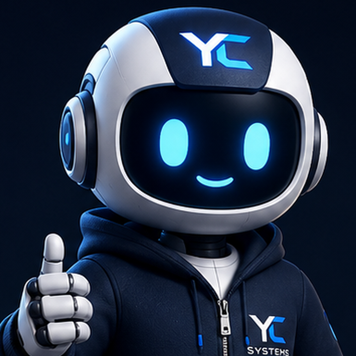

Marca, servicios, contacto, portafolio, SEO básico y version móvil.
Contacto
Cuéntame qué quieres construir, mejorar o mantener.
Cuéntanos qué necesitas construir. Te respondemos con una ruta inicial clara: qué hacer primero, qué entregables preparar y cómo avanzar por fases.
1. Explica tu idea2. Indica prioridad, tiempo y presupuesto3. Recibes una ruta inicial de trabajo
Email principal: contact@ycsystems.ioSoporte: support@ycsystems.ioEscribir por InstagramVer proyectos realesFacebook oficialGitHub
Que puedes solicitar
Sitio web, app, sistema, SaaS, mantenimiento o idioma.
Es suficiente enviar la idea en lenguaje simple. YC Systems la convierte en alcance, pantallas, tecnología y próximos pasos.
Productos, carrito, pedidos, WhatsApp, dominio propio y presentación visual.
Usuarios, roles, clientes, documentos, reservas, dashboards y reportes.
API, admin, base de datos, pagos, apps, notificaciones y arquitectura para crecer.
Cambios, mejoras, contenido, correcciones y acompañamiento después de publicar.
Versiones en español e inglés para presentar tu negocio a mas clientes.

Inicia con claridad
Nexus puede ayudarte a iniciar tu idea.
Explica el problema, el tipo de negocio y el resultado que quieres. YC Systems convierte esa idea en una ruta inicial de producto, tecnología y entrega.